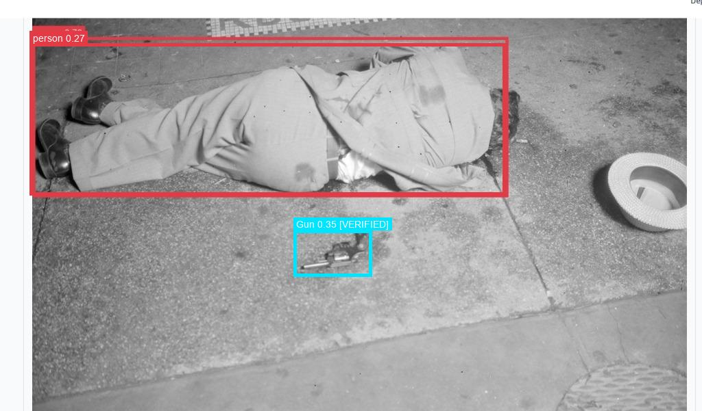
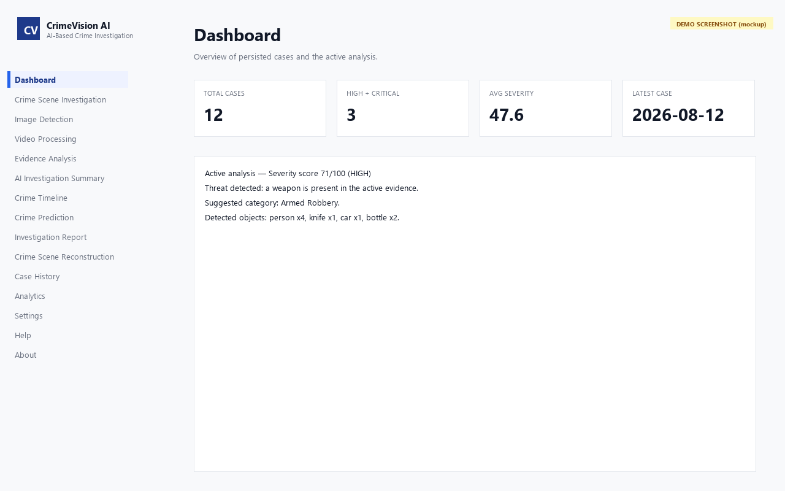
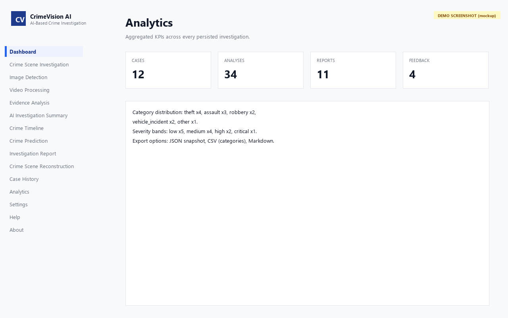
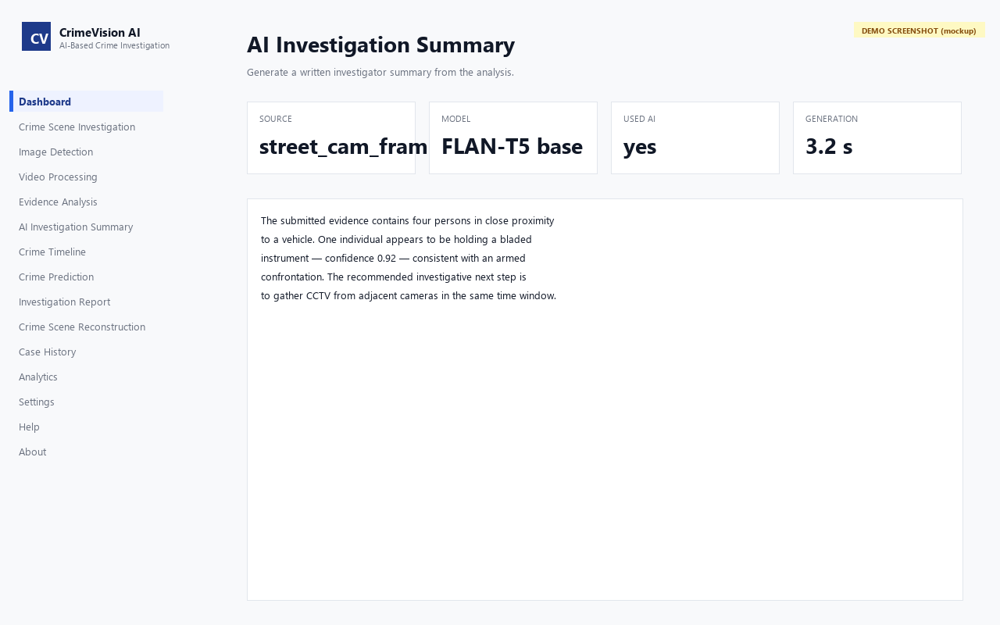
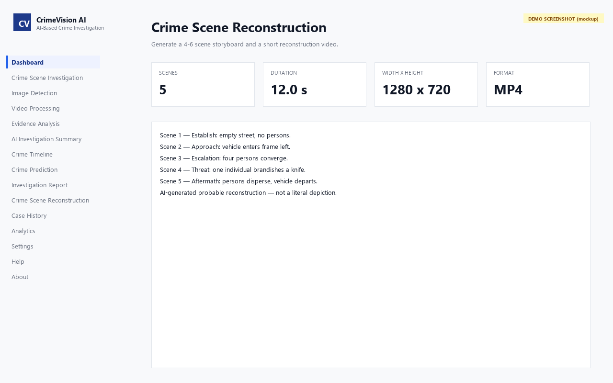
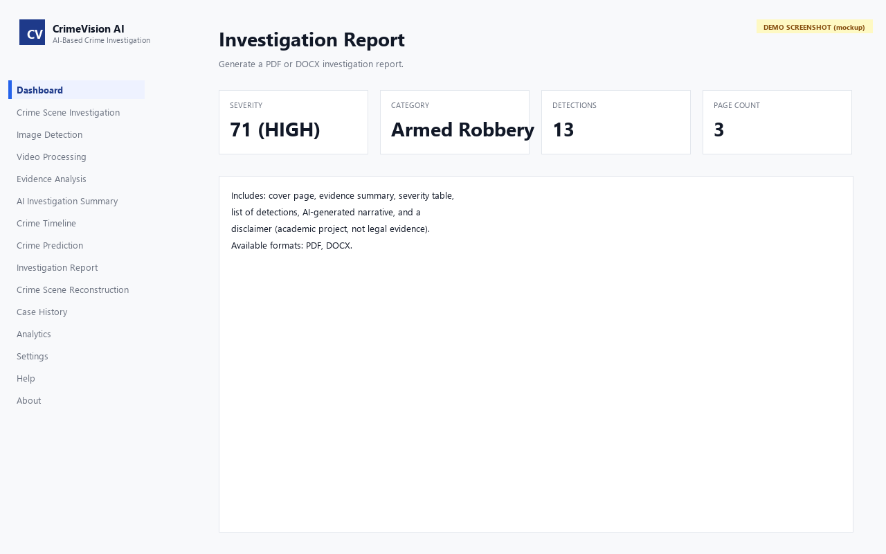

CrimeVision – AI Crime Investigation System
An offline forensic investigation workspace with YOLOv8 detection, 4-stage weapon verification, and pure Python 2D video rendering.
I’m Guntaka Nilakanta Vishnu Vardhan Reddy (Vishnu Reddy), an Information Technology undergraduate at Lakireddy Bali Reddy College of Engineering. I build reliable backend services with Java & Spring Boot, computer vision and forensic pipelines with Python & YOLOv8, and responsive user experiences with React.js.
Dedicated to engineering robust software solutions through deep problem-solving, clean architecture, and continuous learning.
I am an Information Technology undergraduate at Lakireddy Bali Reddy College of Engineering (LBRCE) in Andhra Pradesh, maintaining a 8.84 / 10.00 CGPA. My development journey revolves around turning technical complexity into reliable, maintainable software.
I focus on two synergistic pillars: scalable enterprise backends with Java and Spring Boot, and intelligent computing pipelines utilizing Python, machine learning, and computer vision (YOLOv8 & OpenCV). Whether designing multi-tier database schemas or optimizing ML classification models for imbalanced financial data, I value clean code, unit test coverage, and clear system architecture.
Building secure, scalable backends with Spring Boot and reactive modern frontends with React.js.
Implementing object detection, multi-stage evidence verification, and predictive ML classification.
Certified AWS Cloud Practitioner with practical experience in Docker containerization and Git workflows.
An offline-capable forensic analysis and investigation workspace engineered for law enforcement evidence analysis and timeline reconstruction.
The Crime Investigation AI pipeline operates entirely offline on secure hardware without sending sensitive investigative data to external third-party cloud servers:
Genuine outputs from Crime Investigation AI verified in the local project repository:






Eliminates false alarms from shadows or innocuous handheld objects. Validates firearm subtypes (Revolver, Pistol, Rifle, Shotgun, Knife) via scale, aspect ratio, and multi-frame temporal persistence.
Renders high-definition 1080p forensic investigation videos using pure OpenCV and Pillow without external 3D software or Blender dependencies. Features smooth Ken Burns zoom onto evidence.
Utilizes local Qwen3 14B model (via Ollama) or deterministic local fallback to produce structured, objective summaries adhering to strict legal and forensic evidentiary standards.
Real-world applications spanning AI computer vision, enterprise Java backends, predictive machine learning, and core algorithms.
An offline forensic investigation workspace with YOLOv8 detection, 4-stage weapon verification, and pure Python 2D video rendering.
A categorized view of programming languages, frameworks, AI/ML tools, and cloud platforms verified through academic projects and internships.
Foundational programming & syntax
Services, APIs & Frontend
Modeling, analytics & computer vision
Relational & file-based persistence
DevOps, containerization & quality
Theoretical fundamentals
Hands-on industry exposure and practical software engineering contributions verified in official records.
Specialized in artificial intelligence, AI-driven network intelligence, predictive analytics, and machine learning for enterprise communication infrastructure.
Engineered an end-to-end Online Payment Fraud Detection System using Python and Scikit-Learn.
Contributed to smart home automation, sensor telemetry integration, and automated emergency alarm triggers.
Academic qualifications and certified technical credentials verified from official transcripts.
Lakireddy Bali Reddy College of Engineering
Mylavaram, Krishna District, Andhra Pradesh, India
Key Coursework: Data Structures & Algorithms, Object-Oriented Programming with Java, Database Management Systems, Operating Systems, Computer Networks, and Artificial Intelligence.
Sri Chaitanya Junior College
Andhra Pradesh, India
Netaji High School
Andhra Pradesh, India
Oracle
Oracle
Amazon Web Services (AWS)
Technical Communication & Competency
Professional Soft Skills Program
Download my verified one-page PDF resume or preview the structured credentials, education, and project responsibilities directly in your browser.
Interested in discussing software engineering opportunities, full-stack projects, or collaborating on innovative technology? Reach out anytime.
Fill in your details below. Submitting will validate your input and immediately open a pre-filled email draft to vishnureddy1401@gmail.com.